解析対象: ScreenRecording_04-07-0008_14-42-47_1.mp4（33秒・60fps・1180×2556）
アルバム情報: 写真 214 枚 / 動画 2 本
検出されたシーンパターン数: 15 パターン（＋書道カット）
| # | 種類（シーン） | 枚数 |
|---|---|---|
| 01 | 自民党LDPパネル前 会議①（長テーブル討議） | 62 |
| 02 | LDP会場 全員集合写真 | 5 |
| 03 | レセプション・立食（女性3人記念ほか） | 6 |
| 04 | 和食店 会食①(夜景窓・大広間) | 28 |
| 05 | 洋風レストラン 会食②(丸テーブル) | 12 |
| 06 | 贈呈・記念撮影(赤い額入り賞状) | 10 |
| 07 | 青ジャンパー集団 集合写真 | 7 |
| 08 | 調理服(白)スタッフ 集合写真 | 5 |
| 09 | 屋外スナップ:桜並木 | 4 |
| 10 | 「郡山市議会議員 村上◯◯」看板前 2ショット | 6 |
| 11 | 定食・カツカレー店 会食③ | 9 |
| 12 | PC会議室(緑ボトル) 会議② | 18 |
| 13 | 講演「強く豊かに」赤ポスター背景 | 12 |
| 14 | 自民党LiveOne会議室 会議③ | 18 |
| 15 | 講演② マスク着用の若手登壇 | 9 |
| ― | 書道掛け軸(独立写真) | 3 |
| 写真 合計 | 214 | |
| 動画A | 会議室の様子(0:47) | 1 |
| 動画B | 会議室の様子(1:07) | 1 |
| 動画 合計 | 2 | |
| 大分類 | 含まれるパターン | 枚数 | 比率 |
|---|---|---|---|
| 会議・討議(議員活動の本会合) | 01, 12, 14 | 98 | 45.8% |
| 講演・登壇(マイクスピーチ) | 13, 15 | 21 | 9.8% |
| 集合写真・記念撮影 | 02, 06, 07, 08, 10 | 33 | 15.4% |
| 会食・懇親会 | 03, 04, 05, 11 | 55 | 25.7% |
| 屋外・その他(桜・書道) | 09, 書道 | 7 | 3.3% |
| 合計 | 214 | 100% | |
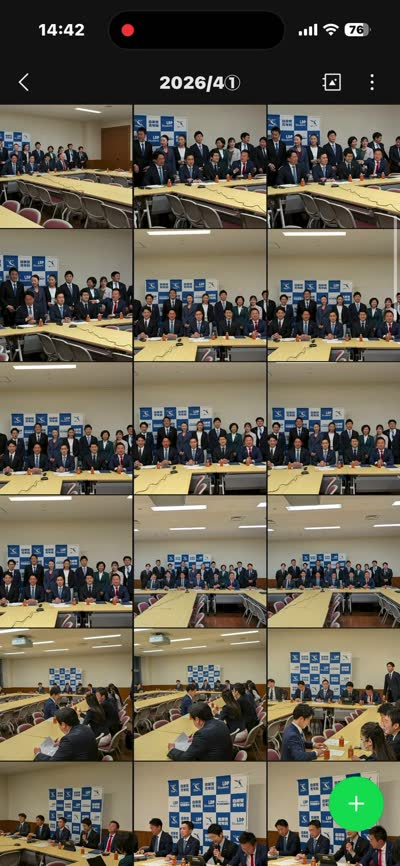
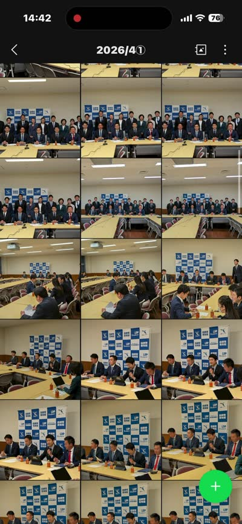
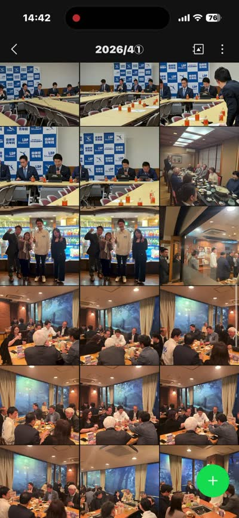
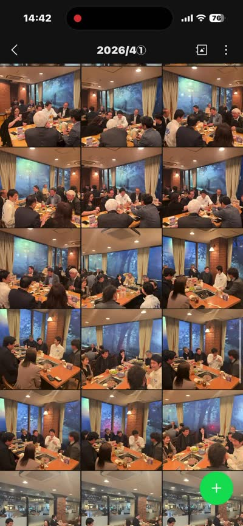
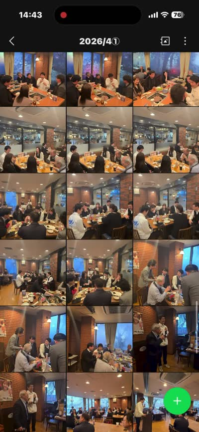
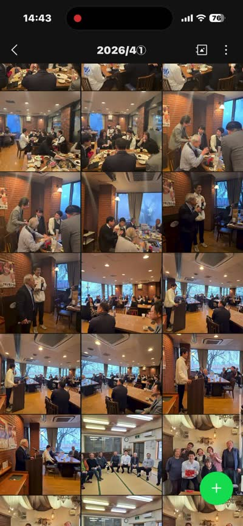
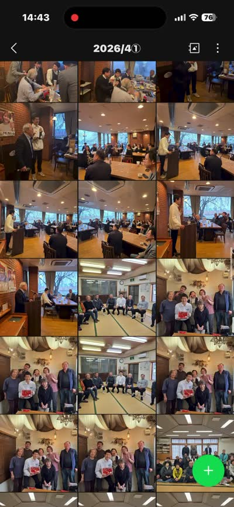
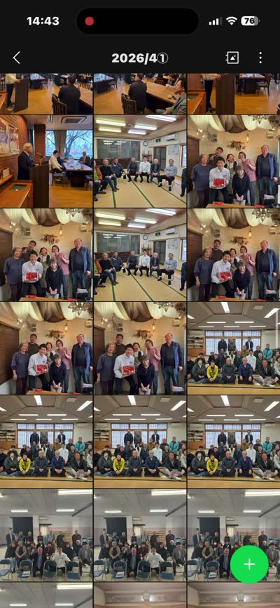
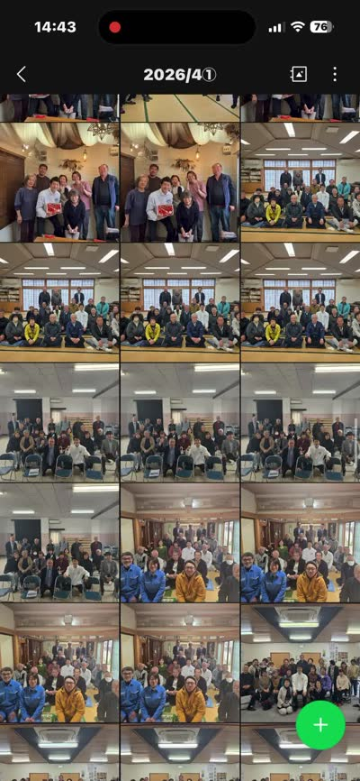
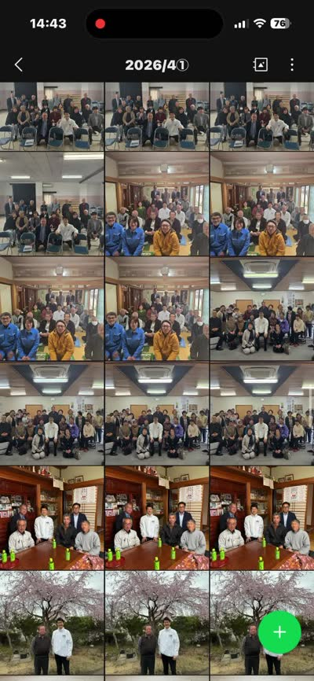
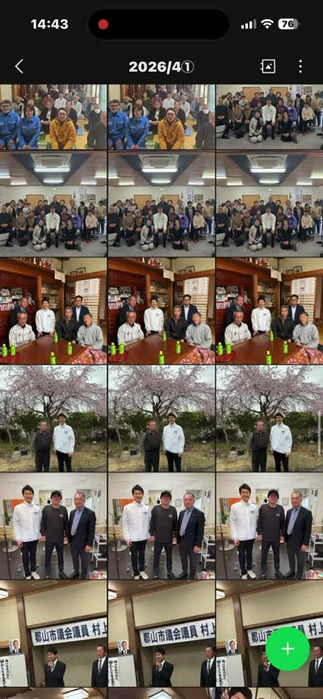
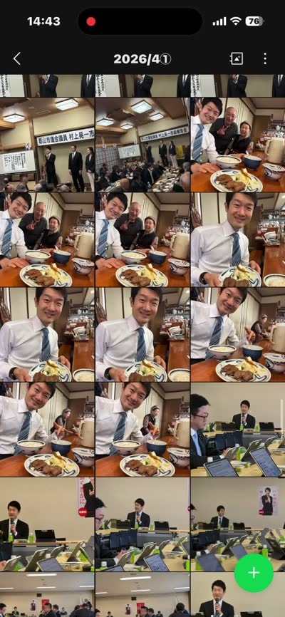
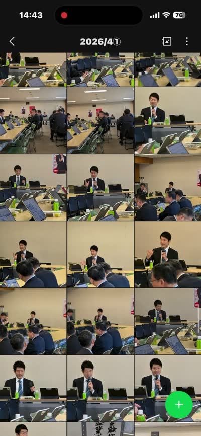
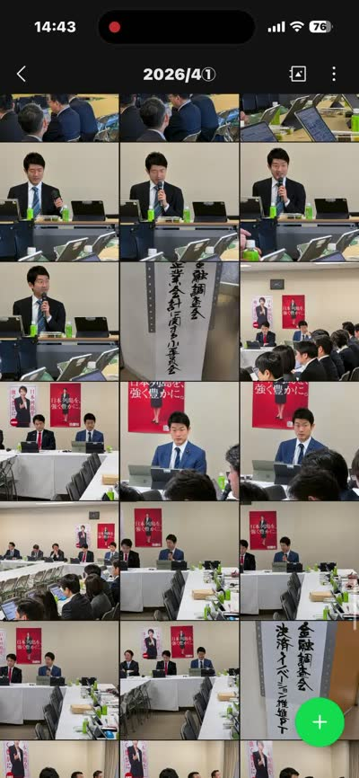
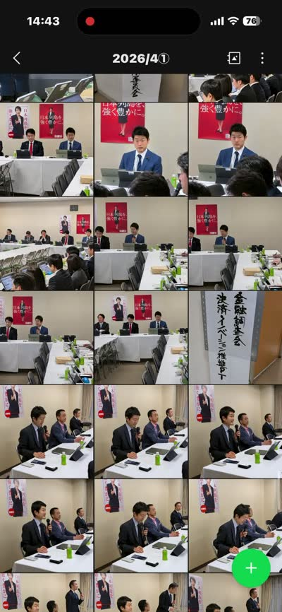